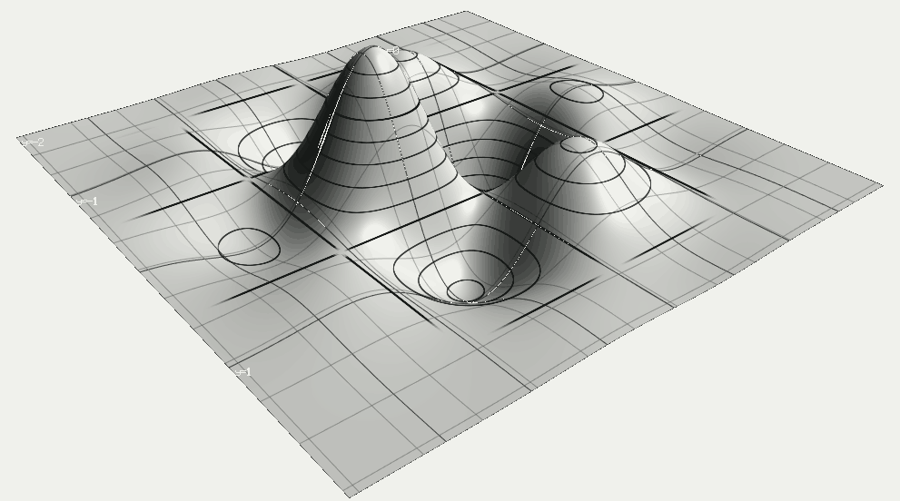
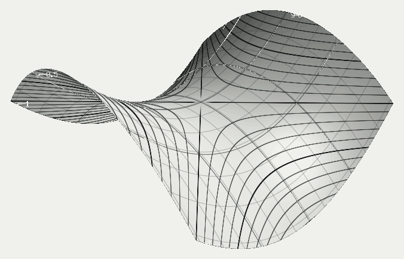
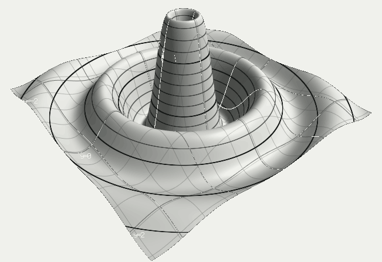
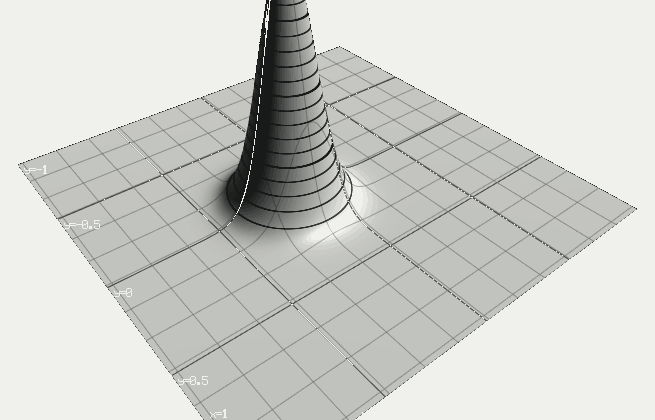

Free Pascal · Windows & Linux · MIT
A plotting library that takes the function itself, not a grid of numbers you sampled from it beforehand. It builds the mesh, draws it on the graphics card, and hands back the pixels. No window is opened and no figure is created.

Plotting libraries are handed an array. This one is handed the expression, and keeps it. That difference is not cosmetic: everything a renderer could do well needs the function to still be there when the drawing starts.
Given the function rather than its samples, a renderer can place a vertex exactly on a peak instead of near one, sample more finely where the surface actually bends, and evaluate again when you zoom instead of stretching a mesh that was fixed long ago. Throw the function away and none of that is possible any more, however good the renderer.
Version 0.2 does none of it yet. It samples a uniform grid, like
everyone else. What it does already is keep the door open: the interface
speaks of quality rather than of a grid size, so the
sampling can grow up without a single line changing on the calling
side.
The formula is read by a Pascal parser and compiled to machine code before a single point is evaluated, so a grid of a quarter of a million points is not a quarter of a million interpreted expressions.
// the parser is a separate library, taken at a tag uses Parser, ParseJit.Parser, nsh_surface;
The parser is pascal-mathparser, the same one that reads formulas for the plotting components. Nashira3D clones it at a tag rather than carrying a copy.
Install the wheel, write the formula, ask for a picture. There is no figure to create, no backend to choose, no event loop, and nothing to close.
import nashira3d with nashira3d.Session("sin(3*x) * cos(3*y)", domain=(-2, 2, -2, 2)) as s: s.save_png("wave.png", 800, 600)
That is the program. It writes an 800 by 600 picture and exits. A frame comes back as a numpy array when you want the pixels rather than a file, and the same session redraws as fast as you can change the camera.
The binding uses cffi in ABI mode, which means it reads the shared library at run time and needs no compiler on your machine. The wheel carries the binary for your platform and nothing else.
pip install nashira3d-0.2.0-py3-none-win_amd64.whl
Wheels are built from the sources in the repository. There is no package on PyPI yet.
Every picture on this page came out of the library through the same call any program would make. They are regenerated by a script, so they cannot drift away from what the code actually does.



Four parts, each doing one thing. The seam between them is a flat C table, so a caller in any language sees the same library.
The order of the members of the C table is part of the contract, and it is recorded in a file of its own beside the header. Anything new is appended at the end; an insertion in the middle shifts everything below it, and a build made elsewhere starts calling the neighbouring function in silence. That happened once, which is why the file exists.
The page in the repository sends a formula and a camera to a small bridge and gets back the bytes the core drew. It carried a fallback parser in JavaScript once. That parser agreed with the library on simple formulas and disagreed on nine of thirty-one probes, so it was removed: a second opinion that is quietly wrong is worse than no picture.
Numbers from the release of this version. Each was produced by a run, not written down from memory.
Stated here rather than discovered later. Every line is a real boundary of version 0.2, not a plan.
One surface at a time. A session draws one function. Several surfaces in one picture, and the depth sorting that goes with them, are not there.
A uniform grid. Sampling does not follow the curvature yet, so a narrow peak between two nodes is missed exactly as it would be anywhere else.
One thread. Every call has to come from the thread that drew the first frame. An OpenGL context belongs to the thread that created it, and on any other thread the card refuses in silence.
A graphics card is required. The core renders through EGL. On a machine with no working EGL it refuses out loud rather than drawing something else.